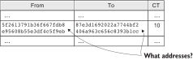
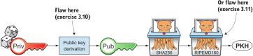

3. Addresses
This chapter covers
-
Basic privacy
-
Replacing names with public key hashes
-
Protecting against expensive typing errors
By the time you reach the end of this chapter, the cookie token spreadsheet will no longer have personal names—you’ll be replacing these names with hashes of public keys. This is useful from a privacy perspective. No one can easily see who’s paying whom, making it harder for others to extract information from the spreadsheet and see how many cookies any of your coworkers eat. Lisa also finds this useful because she doesn’t have to maintain a table of names and public keys.
When switching to public key hashes in the spreadsheet, coworkers will no longer use names in their emails to Lisa. They will instead use strings of hex code representing public key hashes. This means it will be easy to make typing errors. If you make a typing error, your money may end up digitally burned!
Some coworkers invent cookie token addresses (Bitcoin addresses) that protect them from losing money due to typing errors (Figure 1). Cookie token addresses are used between users to pay each other, pretty much like an email address, but they aren’t used in the spreadsheet.
3.1. Cookie-eating habits disclosed
You and many of your coworkers have health insurance with Acme Insurances. Acme has persuaded John to give it a copy of the spreadsheet. Acme figures it can adjust premiums or hold workers’ cookie-eating habits (Figure 2) against them in an eventual insurance dispute.
Another disturbing fact about the spreadsheet is that every coworker can easily look up other coworkers’ balances, as well as their cookie-eating habits.
The coworkers have asked Lisa to come up with a solution to these problems. Otherwise, they’ll stop using the spreadsheet.
3.2. Replacing names with public keys
Lisa has kept the table of names and public keys updated at all times since the coworkers started using digital signatures. She’s sick of doing this, so she comes up with an idea that will benefit both her and her coworkers: Lisa will replace all names in the spreadsheet with their respective public keys (Figure 3).
It’s now hard to see how many cookies Chloe has eaten without knowing
her public key. If Acme Insurances receives this new spreadsheet, it
won’t be able to see who the senders and recipients
are. It will see only the sender and recipient public keys of each
payment.
Lisa can now delete her cumbersome table of names and public keys. But when she does this, users should no longer use names when making payments. They must instead use the sender’s public key and the recipient’s public key (Figure 4).
The email to Lisa contains a few vital parts:
-
A message containing the
-
Amount
-
Sender public key
-
Recipient public key
-
-
A signature made with the sender’s private key
The essential difference is that the payment is now pseudonymous: names are replaced with the corresponding public keys. Otherwise, the payment looks the same as before.
3.2.1. New payment process
Suppose a new coworker just started at the company. Her name is Faiza. The company wants to send her 100 CT as a welcome gift. How can the company send 100 CT to Faiza?
First, the company needs the recipient’s—Faiza’s—public key. Faiza hasn’t used cookie tokens yet, so she needs to create a key pair and give the public key to the sender—the company—as Figure 5 shows.
Faiza creates a private and a public key, following the same process described in [improving-cookie-token-security], but she doesn’t give her public key to Lisa. Now that Lisa doesn’t have the table of names and public keys, there’s no longer any point in giving her the public key. She doesn’t need it. Instead, Faiza gives the public key to the entity that wants to pay her cookie tokens—the company.
The company creates a message asking Lisa to move 100 CT from
037e944a…36de9496 to 029a726c…ad8f436d. It then digitally signs
the message and sends it to Lisa. Lisa uses
-
The message
-
The sender’s public key
-
The signature
to verify that the message is signed with the private key belonging to the sender’s public key. She also verifies that the sender’s public key has enough funds in the spreadsheet. She does this the same way she did when the spreadsheet contained names—she searches for the sender’s public key and calculates the balance.
Lisa has never seen the recipient’s public key before, but she doesn’t care. She cares only that the sender has the money to spend and that the message is correctly signed. She’ll write into the spreadsheet’s recipient column whatever the message asks her to write.
Faiza sees the new row with her public key in the To column. It gives her a warm, fuzzy feeling. She can now spend her cookie tokens as she pleases. Faiza didn’t have to bother Lisa with her public key, saving Lisa a lot of work.
Let’s summarize what’s happened so far:
-
Names have been replaced with public keys in the spreadsheet.
-
Lisa has thrown away the table of names and public keys.
-
Payments are made using public keys instead of names to denote sender and recipient.
These changes have improved privacy and simplified Lisa’s work. At the end of this chapter, we’ll discuss more about how to further improve privacy.
The email to Lisa in this example probably reveals, to Lisa, who the sender is (the company, in this case) because of the From field of the email. For now, we can assume Lisa doesn’t reveal or use this personal information in any way. We use email in this example in place of Bitcoin’s peer-to-peer network. The Bitcoin network, discussed in detail in [ch08], doesn’t use any personal information.
Please take a moment to think about what Acme Insurances can now figure out from the spreadsheet. What information can it get if it figures out the name of the sender or recipient of one payment? It will be able to identify all payments that person has made.
3.3. Shortening the public key
Using public keys in the spreadsheet improved privacy, but such keys take up a lot of space compared to names. The name “John” takes 4 bytes in the spreadsheet, whereas a public key takes 33 bytes. Keeping the spreadsheet as small as possible is important because a smaller spreadsheet means faster downloading for coworkers wanting to check their balance; it also takes less space on Lisa’s hard drive.
3.3.1. Hashing the public key to 20 bytes
Among the coworkers, some developers think they can replace 33-byte public keys with something shorter while still preserving enough security. They suggest replacing each public key in the cookie token spreadsheet with a cryptographic hash of the public key. This shortens senders and recipients in the spreadsheet but also protects users’ money in the event of a flaw in the public key derivation function, as we’ll see later. The hashing isn’t made with a single cryptographic hash function but with two different cryptographic hash functions, as Figure 6 illustrates. We’ll discuss the reason for using two hash functions in the next section.
The public key is first hashed with SHA256, which you should be familiar with from the previous chapter. The output of this cryptographic hash function is then hashed with RIPEMD160, a cryptographic hash function that outputs a 160-bit (20-byte) number. We call this final hash the public key hash (PKH). All public keys in the spreadsheet are replaced with their respective PKHs.
The payment process now differs from when Faiza received her 100 CT from the company. Suppose John wants to buy a cookie (Figure 7).
First, the message to Lisa is changed a bit. John must use the cafe’s PKH—which was previously a public key—as the recipient. The sender is still a public key in the message because that public key is needed to verify the signature. Lisa doesn’t keep people’s public keys around anymore.
Second, because the spreadsheet now contains PKHs, Lisa must calculate the PKH from the sender’s public key to check the sender’s balance and be able to enter the payment into the spreadsheet.
3.3.2. Why SHA256 and RIPEMD160?
Using RIPEMD160 as the last cryptographic hash function is a deliberate choice to make the PKHs shorter. Compare the output from SHA256 with the output from RIPEMD160:
SHA256: 85ae273f0aa730eddf2285d3f3ab071eb29caba1e428db90e6dfbd71b8e1e918 RIPEMD160: 5f2613791b36f667fdb8e95608b55e3df4c5f9eb
It’s a well-balanced trade-off between security and size.
But why have two different cryptographic hash functions? We don’t really know why this scheme was chosen for Bitcoin because its inventor, Satoshi Nakamoto, has stopped corresponding with the Bitcoin community. We can only speculate. Instead, let’s discuss some of the scheme’s properties.
If either hash function isn’t pre-image-resistant, the other still is. This means if you can calculate an input to RIPEMD160 that gives a certain PKH output, you still need to pre-image attack SHA256 (with about 2255 guesses) to find the public key. Likewise, if you can calculate an input to SHA256 that gives a certain output, you first need to pre-image attack RIPEMD160 before you can use that pre-image to calculate the public key.
On the other hand, if it turns out that the output set of either cryptographic hash function is smaller than anticipated, then the security of the combined hash-function chain suffers. To make this clearer, pretend SHA256 has only 100 possible output values. You can steal money from anyone by trying different random private keys and calculating the corresponding PKHs. If a PKH matches your target, you’ve found a private key you can steal the money with. On average, you’d only have to test 50 different private keys to steal from one PKH. This property gives the worst of both worlds: if either of the two functions is weak, then the whole chain is weak. The probability that any function has this flaw is small. If any such flaw exists, the reduction in the output set likely isn’t significant enough to endanger security in practice. Remember, we’ve yet to find one single collision in any of these cryptographic hash functions.
Another thing to note is that different organizations developed the two cryptographic hash functions. RIPEMD160 was developed at a European university in open collaboration with a broad community of cryptographers. SHA256 was developed by the US National Security Agency (NSA). Both are considered secure, and both have been subject to scrutiny from a large number of people.
Now that we’ve strengthened the security of the cookie token spreadsheet, let’s think about privacy again. Has this improved privacy? Is it harder for Acme Insurances to figure out information about who’s paying whom now compared to when we used public keys in the spreadsheet?
The answer is no. There is practically a one-to-one correspondence between the public keys and the PKHs. Using PKHs doesn’t hide personal information any more than using plain public keys.
3.4. Avoiding expensive typing errors
When Lisa verifies a payment before executing it, she doesn’t care who the recipient is or if it’s even an existing recipient. She’ll put into the recipient column of the spreadsheet whatever the payer asks her to. She can’t even know if a recipient is valid or not, because she no longer knows everyone’s public keys.
This is convenient for Lisa, but it can cause people to lose money if they aren’t careful. Imagine once again that John wants to buy a cookie. This time, he’s not careful enough when writing the message, as Figure 8 shows.
He makes a typing error in the recipient PKH. The last character is d
when it should have been c. What happens now?
John doesn’t notice the error and happily signs the message and sends
the email to Lisa. Lisa verifies the signature, which verifies fine,
and calculates the sender’s PKH. She doesn’t care about the
recipient. She inserts a new row in the spreadsheet paying from
5f261379…f4c5f9eb to 87e3d169…8393b1cd.
Then she considers herself done, moving on to other interesting tasks. The cafe owner, who is searching for his PKH in the spreadsheet, doesn’t see an incoming payment. John stands at the counter in the cafe yelling at the cafe owner that he did send money, so “Give me the freakin’ cookie!” The cafe owner refuses. John takes a close look at the spreadsheet and searches for his PKH. He finds the one he just made and realizes his spelling mistake.
John has sent money to a “public key hash” for which there is no known private key. No one will ever be able to spend those 10 CT—not the cafe, not John, nobody. John has just digitally burned 10 CT.
Unfortunately, this will probably happen again and again in the future if nothing is done to prevent it. The problem can happen at any point from when the cafe owner reads his own PKH to give to John to when John writes his message before signing it. You could argue that Lisa could also make this mistake when she updates the spreadsheet, but she’s so thorough that this would never happen. She’s just too good at what she’s doing. Lisa will never cause someone else’s funds to be burned.
3.4.1. Where were we?
This chapter deals with Bitcoin addresses. To remind you where this all fits into Bitcoin, remember the diagram from [ch01], shown again in Figure 9.
Toward the end of this chapter, we’ll end up with Bitcoin (cookie token) addresses. We’ve just replaced the names in the spreadsheet with PKHs. We’ll now get to Bitcoin addresses. A Bitcoin address is a converted PKH—that is, it’s a PKH written in a way more suitable for human users and safe against spelling errors. The PKH is sent to Lisa (or Bitcoin nodes), but the address is what users see and give to each other.
3.4.2. Base58check
Among the coworkers, the security-oriented people discuss the problem with typos and come up with the idea of cookie token addresses. A cookie token address is a PKH encoded to detect typing errors. The PKH can be converted back and forth between this encoding and plain byte format.
Suppose Faiza feels sorry for John and wants to give him 20 CT from her 100 CT to ease his pain. She doesn’t want to make the same mistake John did, so she asks him for his cookie token address. John creates this by encoding his PKH with a function called base58check (Figure 10).
The result is John’s cookie token address: 19g6oo8f…gCenRBPD. John
hands this address to Faiza, who then makes a payment following the
process in Figure 11.
The payment process changes for the payer, but nothing changes for Lisa. Faiza will base58check decode John’s address into a PKH. This decoding ensures that no typing errors were made in the address.
As mentioned previously, a PKH can be converted to an address and back to a PKH. It is not a one-way function. It’s just different ways to represent the PKH, either as a series of bytes or as an address (Figure 12).
The email to Lisa is exactly the same as before. Only users employ the cookie token address. It isn’t part of Lisa’s validation process or the spreadsheet in any way.
Base58check encoding
Let’s see how this mysterious base58check encoding works (Figure 13). First, a version is added before the PKH. The people who came up with the idea of cookie token addresses wanted to make future upgrades to the address format easy. Right now, only one version of cookie token addresses is available. This version is a single 0 byte.
To detect typing errors, a checksum is added. This checksum is calculated from the versioned PKH. To create a checksum, base58check hashes the versioned PKH with double SHA256. This means it’s first hashed with SHA256, and the resulting hash is hashed again with SHA256. Take the first 4 bytes of the second hash, and let those 4 bytes be the checksum. This checksum is then appended to the versioned PKH. You’ll soon see how this checksum protects users from typing errors. Be patient!
You started with a PKH of 20 bytes (40 hex characters). But now that you’ve added a version and a checksum, you have 25 bytes (50 hex characters). To make up for this increase, you’ll encode the 25 bytes in a more compact way than hexadecimal encoding.
Using a more compact encoding
Hex encoding is an inefficient way to represent data bytes. It
requires 2 characters for each byte. We use only 16 characters, where
each character represent 4 bits, 0000 to 1111.
Many encoding schemes exist that use more characters to represent data. The most widely known is base64, in which each character represents 6 bits of data; to do this, the scheme needs more characters than just letters and digits. Base64 uses the following alphabet:
ABCDEFGHIJKLMNOPQRSTUVWXYZabcdefghijklmnopqrstuvwxyz0123456789+/
The character A represents the bits 000000, B represents
000001, and the character / represents 111111. This is a nice,
easy, compact way to represent data with human-readable
characters. I’ve already used base64-encoded data several times in
this book to represent signatures.
But base64 doesn’t quite fit the bill for cookie token addresses. We
need an encoding that doesn’t just detect typing errors when they happen
but minimizes the risk of making them. Notice how some characters look
similar in some fonts, like lI (lowercase L, capital I) and 0O (zero
and capital O). We also need a format that users can easily copy and
paste, meaning special characters such as + and / shouldn’t be
allowed—they’ll prevent us from marking the whole address by
double-clicking it. Removing those six characters reduces the
possibility of typing errors. But now we have only 58 characters left,
so we need another type of encoding.
This new way to encode data is called base58 because the alphabet is the following 58 characters:
123456789ABCDEFGHJKLMNPQRSTUVWXYZabcdefghijkmnopqrstuvwxyz
| If you feel put off by this low-level base58 mumbo jumbo, you can skip to Section 3.4.2.3 and just accept that base58 is a way to encode and decode data. For the rest of you, please continue. It’s fun. |
In base64, each character represents exactly 6 bits, which makes it straightforward to encode and decode data. But with base58, each character represents slightly less than 6 bits but more than 5 bits. We need to encode data differently.
Let’s get back to the example in which John creates his address. He’s just added a version and a checksum. Now it’s time to encode the 25 bytes into the final result: the address (Figure 14).
The overall strategy of base58 is to treat the data as a huge number
that you divide by 58 over and over until the quotient is 0; you keep
the remainders of every division. You look up each remainder in the
lookup table and append a 1 last for each leading 0 byte in the
input. The string is finally reversed, and the result is John’s
cookie token address. Note that all cookie token addresses, not just
John’s, will start with a 1. This is because the version byte is 0,
which is encoded by the character 1.
You can decode base58-encoded data such as John’s address back to the original input of the base58 encoding. I’ll leave this as an exercise for the interested reader.
Note that base58 encoding is nothing new. It’s a generic way to convert a decimal number to any other base. You can use the same algorithm to convert to base3, instead—divide by 3 instead of 58. Maybe you’d also like to change the lookup table to map 0 to 0, 1 to 1, and 2 to 2 to get the characters you’re used to. For example, write 17 in base 3:
Then, look up the remainders in the lookup table (same digits as the
ones you convert), and you’ll get 2 2 1. Reverse that to get the final
result: 1 2 2. Verify that it’s correct as follows:
Base58check decoding
John has just created his cookie token address by base58check encoding his PKH. He’s given the address to Faiza so she can send him 20 CT. Now, Faiza needs to write a message to Lisa. To do this, she needs John’s PKH. The great thing about base58check encoding is that the process can be reversed so you can get the PKH from the address while simultaneously checking for typing errors (Figure 15).
Faiza takes John’s cookie token address and base58 decodes it. Then, she removes the checksum and uses the remaining part, the versioned PKH, to calculate the checksum again. The newly calculated checksum and the just-removed checksum must match. Otherwise, a typing error has occurred, in which case Faiza won’t create the message. She’ll know the address was corrupted somewhere along the way and refrain from sending an email to Lisa. She’ll verify that she entered the address correctly and that John gave her the correct address to learn where it went wrong.
How safe is the checksum? Suppose a typing error occurred in an address. What’s the probability that the checksum won’t detect the error? The checksum is 4 bytes, which corresponds to 232 ≈ 4.3 billion values. The chance is about 1 in 4.3 billion that base58check fails to detect the typing error. It’s pretty safe.
3.5. Back to privacy
Although privacy improved when we replaced names with PKHs, the spreadsheet still reveals some information that Acme Insurances finds useful.
For example, Acme can probably figure out the cafe has the PKH
87e3d169…8393b1cc because a lot of 10 CT payments have been made
to this PKH. From this, Acme will be able to see which PKHs are making
the most 10 CT payments to that PKH. Let’s say Acme talks to Faiza and
asks her for information about her recent payments. She’s made only one
payment so far, the one to John. Faiza, unaware of why Acme is asking
these questions, discloses that the transaction is for John.
A week later, John receives a letter from Acme politely informing him that he’s been promoted to a higher risk category, and his insurance premium has been adjusted accordingly.
Some privacy issues obviously remain. Luckily, users can create as many addresses they like. For example, the cafe could create a unique address for every incoming payment. And John could create a brand-new cookie token address the next time he accepts cookie tokens from Faiza.
Using unique addresses for each payment will make it harder for Acme to extract information from the cookie token spreadsheet, because they won’t be able to tell which payments belong to the same person.
3.6. Recap
This chapter started with replacing the names in the spreadsheet with users’ respective PKHs.
Then, we used base58check to create an address from a PKH. Let’s put the pieces together and look at the whole cookie token address-creation process from random number generator to the address.
Faiza makes sure no typing errors happen by base58check decoding the address before signing the message.
3.6.1. System changes
The concept table (Table 1) isn’t updated in this chapter. Cookie token addresses are exactly what Bitcoin uses, so we haven’t introduced any concepts that differ from Bitcoin.
| Cookie Tokens | Bitcoin | Covered in |
|---|---|---|
1 cookie token |
1 bitcoin |
|
The spreadsheet |
The blockchain |
|
Email to Lisa |
A transaction |
|
A row in the spreadsheet |
A transaction |
|
Lisa |
A miner |
Thanks to PKH and cookie token addresses, Lisa can ditch her table of public keys. You can add PKH and addresses to your toolbox for later use, and we release version 3.0 of the cookie token system (Table 2).
| Version | Feature | How |
|---|---|---|
|
Safe from expensive typing errors |
Cookie token addresses. |
Privacy improvements |
A PKH instead of a personal name is stored in the spreadsheet. |
|
2.0 |
Secure payments |
Digital signatures solve the problem with imposters. |
1.0 |
Simple payment system |
Relies on Lisa being trustworthy and knowing everyone’s face. |
Finite money supply |
7,200 new CT are rewarded to Lisa daily; the amount halves every four years. |

3.7. Exercises
3.7.1. Warm up
-
The PKH is shorter than the public key—only 160 bits. We made it shorter using RIPEMD160. Why do you want it to be shorter? There are two good reasons.
-
Base58check encoding is used to create a cookie token (Bitcoin) address from a PKH. Is it possible to reverse this process to create a PKH from an address?
-
When is base58check decoding used, and by whom?
-
Base58 encode the two hex bytes
0047. Use the following diagram. You may skip this exercise if you didn’t read the section on base58 encoding. -
What in an address makes it mostly safe from typing errors?
3.7.2. Dig in
-
Imagine that John wants a cookie from the cafe. He has two addresses: @1 with a balance of 5 CT, and @2 with 8 CT. His total balance is 13 CT, so he should be able to afford 10 CT for a cookie. Give an example of how he could pay 10 CT to the cafe.
-
Is it possible to deduce what cookie token addresses were involved in a certain payment by looking at the following spreadsheet?
 -
Is it possible to deduce what public keys were involved in a certain payment by looking at just the spreadsheet?
-
Suppose everybody always used unique addresses for each payment. What information from the spreadsheet could Acme use to roughly identify the cafe’s addresses?
-
Suppose there was a serious flaw in the public key derivation function, so anyone could calculate the private key from a public key. What prevents a bad guy from stealing your money in this scenario?
 -
Suppose there was a serious flaw in RIPEMD160, so anyone could easily figure out a 256-bit pre-image of the PKH. This would mean it wasn’t pre-image resistant. What prevents a bad guy from stealing your money in this scenario?
3.8. Summary
-
Privacy is important for you, not just for criminals.
-
Using PKHs instead of personal names as recipients for payments is important for privacy and more secure.
-
Encoding a PKH as a Bitcoin address, or cookie token address, reduces the risk of sending money into the void, thanks to the checksum in the address.
-
Only users care about Bitcoin addresses. The Bitcoin network, or Lisa, deals with plain PKHs.
-
You can have as many Bitcoin addresses as you like. Using multiple addresses, preferably one per received payment, improves your privacy.